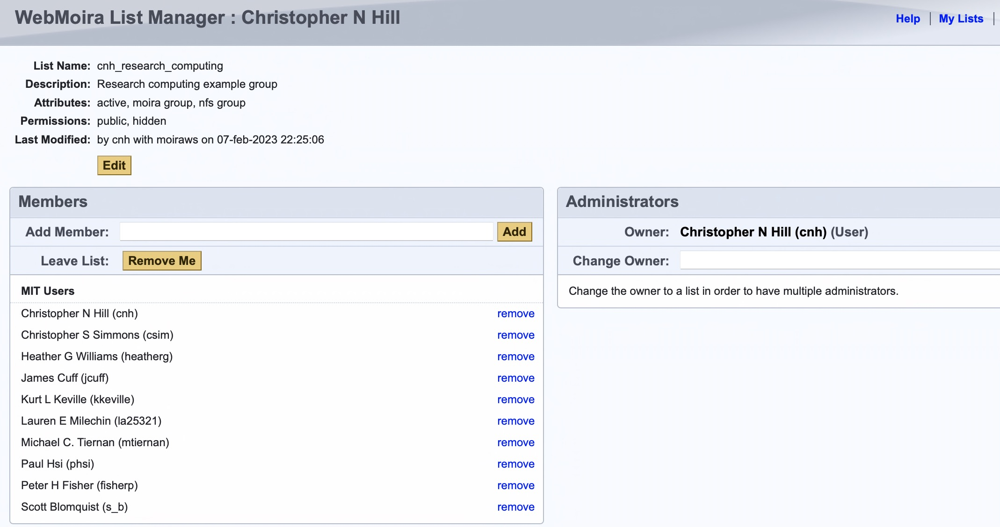

Project Specific Filesystems
Purchasing Storage
Additional project and lab storage can be purchased on ORCD shared clusters by individual PI groups. This storage is mounted on the cluster and access to the storage is managed by the group through MIT Web Moira, https://groups.mit.edu/webmoira/ (see below for details).
Current pricing for storage is
| Storage Type | Pricing | Duration | Backup |
|---|---|---|---|
| NESE encrypted at rest disk. |
$2.50/month 50TB minimum, 10TB increments. |
12 month minimum. |
No automated backup. |
The NESE encrypted at rest disk uses a large centrally managed storage cloud at the MGHPCC facility. Any shared ORCD cluster at the MGHPCC can access this storage. Data on NESE disk is transparently encrypted at rest.
To purchase storage please send an email to orcd-help@mit.edu.
Managing access using MIT Web Moira
Individual group storage is configured so that access is limited to a set of accounts belonging to a web moira list that is defined for the group store. The owner and administrators of group storage can manage access themselves, by modifying the membership of an associated moira list under https://groups.mit.edu/webmoira/list/. The name of the list corresponds to the UNIX group name associated with the ORCD shared cluster storage.
Moira Web Interface Example
The figure below shows a screenshot of the web moira management page at
https://groups.mit.edu/webmoira/list/cnh_research_computing for a hypothetical
storage group named cnh_research_computing. The interface provides a
self-service mechanism for controlling access to any storage belonging to
this group. MIT account ids can be added and
removed as needed from this list by the storage access administrators.
